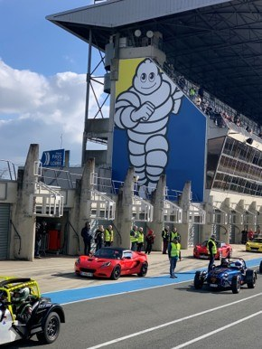
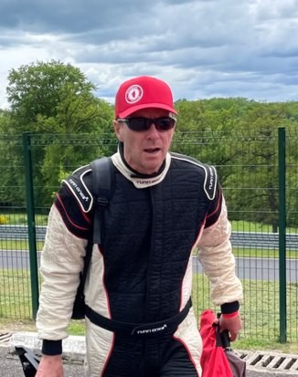

L'HOMME DERRIÈRE
CHAQUE TRAJECTOIRE



Arrivé au Mans en 1991, Philippe est immédiatement happé par le sport automobile — le circuit Bugatti, les 24 Heures, les sports mécanique comme art de vivre. Ce qui commence comme une passion devient une vocation : transmettre le pilotage avec rigueur, pédagogie et plaisir.
Pilote formé à toutes les disciplines — moto, monoplace, Porsche Carrera Cup, Karting, endurance en Laponie et au Canada en motoneige — il rejoint le Club Lotus France en 2012 et en devient un acteur clé, organisant road trips et accueil au Mans Classic. Aujourd'hui diplômé BPJEPS Sport Automobile FFSA Academy, il fonde Drive Precision pour proposer un coaching vrai et adapté à chacun(e), ainsi que des stages de pilotage pour débutant(e)s ou expérimenté(e)s.